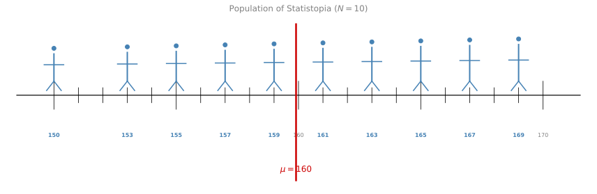
Populations and Samples
statistics
Statistics is all about drawing conclusions from data. But here is the key challenge: we almost never have access to all the data. Instead, we work…
Statistics is all about drawing conclusions from data. But here is the key challenge: we almost never have access to all the data. Instead, we work with a smaller piece of it and try to make inferences about the whole. This is where the concepts of populations and samples come in.
Two Branches of Statistics
Statistics has two principal functions: to describe quantitative data, and to draw inferences from it.
Descriptive statistics summarize the general nature of a data set. For instance, how certain measured characteristics appear to be “on average,” how much variability exists, and how closely two or more characteristics are associated with one another. Examples include:
- Measures of central tendency (mean, median, mode)
- Measures of variability (variance, standard deviation, range)
- Correlation coefficients
Inferential statistics help the researcher make decisions and generalizations about a population based on a sample. They have two main functions:
- Estimating population parameters from a random sample (e.g., estimating \(\mu\) from \(\bar{X}\)).
- Testing hypotheses, that is, deciding whether observed differences between groups are real or just due to chance.
Where Do Our Topics Fit?
| Topic | Branch |
|---|---|
| Populations and Samples (this page) | Foundation for both |
| Sample Variance | Descriptive |
| Central Limit Theorem | Bridge (descriptive to inferential) |
| Point Estimation & MLE | Inferential |
| Bayesian Statistics | Inferential |
| Linear Regression | Both (descriptive model + inferential testing) |
| Confidence Intervals | Inferential |
| Hypothesis Testing | Inferential |
| t-Tests (t-distribution, two-sample, proportions, paired, A/B testing) | Inferential |
Most of this course focuses on inferential statistics, using samples to make claims about populations. But we start with descriptive tools (variance, distributions) because inferential methods build on top of them.
Population
A population is the entire set of individuals or elements that you want to study. These are all the subjects that share the common behavior or property you are interested in.
For example, if you want to measure the height of all humans on Earth, then all humans are your population. If you want to study the price of every avocado sold in the US, then every single avocado transaction is your population.
The population size is denoted by \(N\) (capital N).
Sample
A sample is a subset of the population that you actually observe or measure. Since studying an entire population is usually impractical, you take a sample and use it to draw conclusions about the population as a whole.
For example, if you measure the heights of 100 randomly chosen people, those 100 people are your sample.
The sample size is denoted by \(n\) (lowercase n).
Statistopia Example
Imagine you have been hired as a data scientist on the island of Statistopia. Your first task is to find the average height of the people living there.
Your initial plan is simple: ask everyone on the island for their height and divide by the total number of people. Then you find out the population size is \(N = 10{,}000\). That is far too many people to measure individually.
So you change strategies. Instead of measuring everyone, you randomly select a subset of the population, say 100 people. That subset is your sample, and you use it to estimate the average height of the whole population.
For simplicity, assume there are only 10 people on Statistopia. Their heights range from 150 cm to 169 cm, and the population mean is \(\mu = 160\) cm (the red line).
Why Random Sampling Matters
Suppose the population of Statistopia is 10 people, and you want to take a sample of 4. There are two ways you could do it:
- Pick 4 people at random from the population.
- Line everyone up from shortest to tallest and pick the first 4.
The first approach is correct. The second approach would bias your sample toward shorter people, giving you a smaller average that does not represent the population.
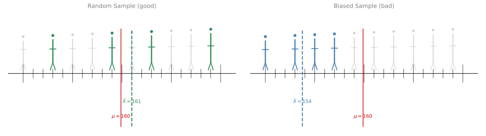
You always want to take random samples to avoid introducing bias.
Independent and Identically Distributed (i.i.d.) Samples
There are two important properties that your samples must have:
Independence
Suppose you pick 4 random people for your first sample. Then you want to run the experiment again and pick another 4 people. If you exclude the people from the first sample, the second sample depends on the first one. That is not good.
Each time you run the experiment, you must start fresh. People are allowed to be repeated across samples. Otherwise, the second sample depends on the first one, and that ruins the experiment.
Identical Distribution
Whatever rule you use to pick the first sample must be the same rule you use to pick the second one. If you go to a particular part of town where people happen to be taller or shorter, you will not get a representative sample.
Your samples must all be independent and identically distributed (often abbreviated as i.i.d.).
Examples
i.i.d. sampling:
- You want to estimate the average height of students at a university. You assign every student a number and use a random number generator to pick 50 students. Each student is selected independently, and the same random process is used each time. These samples are i.i.d.
- You roll a fair die 100 times. Each roll is independent of the others and follows the same probability distribution. The outcomes are i.i.d.
Not i.i.d. (independence violated):
- You survey 50 students by going to one dorm room and asking each person to recommend the next person to survey. Each selection depends on the previous one (this is called chain-referral or snowball sampling).
- You measure the temperature in a city every hour for a week. The temperature at 3 PM is highly correlated with the temperature at 2 PM. Consecutive measurements are not independent.
Not i.i.d. (identical distribution violated):
- You measure heights by sampling 25 people from an elementary school and 25 people from a professional basketball team. The two groups come from very different height distributions, so the combined sample is not identically distributed.
- You collect house prices from both rural towns and Manhattan. These follow different distributions, violating the “identically distributed” requirement.
Review Questions
1. What is the difference between a population and a sample?
TipAnswer
A population is the entire set of individuals or elements you want to study. A sample is a smaller subset of the population that you actually observe or measure, used to draw conclusions about the population as a whole.
2. Why is it important to take random samples rather than selecting subjects in a systematic way (for example, picking the shortest people)?
TipAnswer
Systematic selection introduces bias. For example, picking only the shortest people would give you a sample average that is lower than the true population average. Random sampling ensures that every member of the population has an equal chance of being selected, producing a more representative sample.
3. What does it mean for samples to be independent and identically distributed (i.i.d.)?
TipAnswer
Independence means that the selection of one sample does not affect the selection of another. People can be repeated across samples, and each experiment starts fresh. Identically distributed means the same sampling rule is applied every time, so you are not favoring a particular subgroup of the population in one sample versus another.
Avocado Toast Example
After the avocado toast trend, you decide to study the price of avocados in the US. You cannot check every single purchase of avocados in the country, so you randomly pick 4 stores and record the prices for each avocado sale.
- Population: all avocados sold in the US.
- Sample: the avocados sold by the 4 stores you selected.
Implications for Machine Learning
In machine learning, every data set you work with is actually a sample, not the population, no matter how large the data set is. For example, when working with classification of cat images, you cannot collect all possible images of cats and non-cats. Your data set is simply a sample from that infinite population.
It is important to have a representative data set. This means the distribution of your data set should match the distribution of the population.
For example, if all your cat photos show cats on grass, the model might learn to associate grass with cats. Then when it sees a cow standing in grass, it might classify it as a cat. And when it sees a cat on a couch, it might fail to recognize it because there is no grass. Having a variety of images for both classes is essential.
Review Questions
4. In the avocado example, what is the population and what is the sample?
TipAnswer
The population is all avocados sold in the US. The sample is the avocados sold by the 4 randomly selected stores.
5. Why is having a representative data set important in machine learning?
TipAnswer
If the data set is not representative, the model will learn patterns that do not generalize to the full population. For example, a cat classifier trained only on cats in grass might associate grass with cats rather than learning actual cat features. A representative data set ensures the model learns the true underlying patterns.
Population Mean and Sample Mean
Now that we understand populations and samples, let us talk about what we actually compute from them.
Population Mean (\(\mu\))
If you know every value in the population, you can compute the population mean, denoted by \(\mu\) (the Greek letter “mu”):
\[ \mu = \frac{1}{N} \sum_{i=1}^{N} x_i \]
Back in Statistopia (with population size \(N = 10\)), the average height across all 10 people is \(\mu = 160\) cm.
Sample Mean (\(\bar{X}\))
In practice, you cannot measure everyone. If you randomly select \(n\) people, the average of their heights is the sample mean, denoted by \(\bar{X}\) (read as “X-bar”):
\[ \bar{X} = \frac{1}{n} \sum_{i=1}^{n} x_i \]
The sample mean is your estimate of the population mean.
Comparing Samples
Suppose you take two samples of size \(n = 6\):
- \(\bar{X}_1 = 160.97\) cm (6 randomly chosen people)
- \(\bar{X}_2 = 156\) cm (the 6 shortest people)
Which is the better estimate of \(\mu = 160\)? Clearly \(\bar{X}_1\), because it was drawn randomly. The second sample is biased toward shorter heights, so it underestimates the population mean even though the sample size is the same.
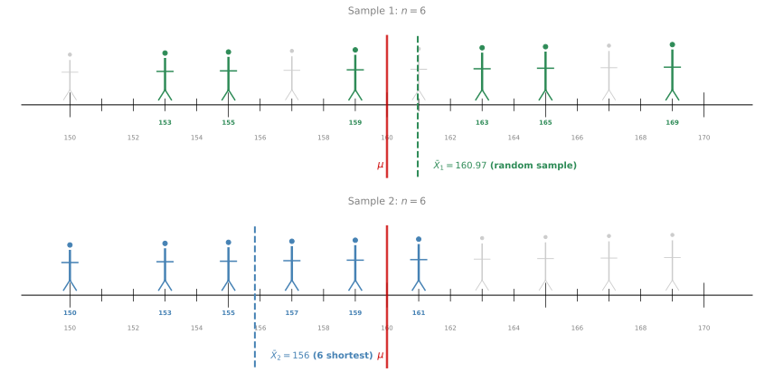
Effect of Sample Size
What if you only pick \(n = 2\) people and get \(\bar{X}_3 = 158\) cm?
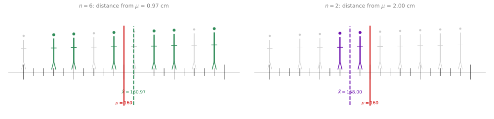
The larger sample (\(n = 6\)) gives a better estimate. In general, the bigger the sample size, the better the estimate of the population mean. We will see why this happens formally in the Law of Large Numbers section below.
Review Questions
6. What is the difference between \(\mu\) and \(\bar{X}\)?
TipAnswer
\(\mu\) is the population mean, computed over all \(N\) elements in the population. \(\bar{X}\) is the sample mean, computed over a subset of \(n\) elements, and is used as an estimate of \(\mu\).
7. Two samples both have size \(n = 6\), but one gives \(\bar{X} = 160.97\) and the other gives \(\bar{X} = 156\). Why can equal-sized samples produce different quality estimates?
TipAnswer
Sample size alone does not guarantee a good estimate. If the sample is not drawn randomly (for example, picking only the shortest people), it will be biased. Random sampling is essential for the sample mean to be a reliable estimate of the population mean.
8. Why does increasing the sample size generally improve the estimate of \(\mu\)?
TipAnswer
A larger sample captures more of the population’s variability, making it more likely that the sample mean will be close to the true population mean. With very few observations, there is more room for the sample to be unrepresentative by chance.
Population Proportion and Sample Proportion
We can apply the same logic of population vs. sample to proportions. Instead of computing an average, we are computing the fraction of items that have some characteristic.
Population Proportion (\(P\))
Back in Statistopia, imagine all 10 people own exactly one form of transportation: either a car or a bicycle. If 4 out of 10 people own a bicycle, then the population proportion is:
\[ P = \frac{x}{N} = \frac{4}{10} = 0.40 \]
where \(x\) is the number of items with the characteristic of interest, and \(N\) is the population size. So 40% of the population owns a bicycle.
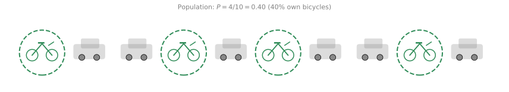
Sample Proportion (\(\hat{P}\))
If you cannot survey all 10 people, you take a random sample. Suppose you randomly select 6 people, and 2 of them own a bicycle. The sample proportion is:
\[ \hat{P} = \frac{x}{n} = \frac{2}{6} = 0.333 \]
where \(n\) is the sample size. This is denoted \(\hat{P}\) (“P-hat”) and serves as an estimate of the population proportion \(P\).
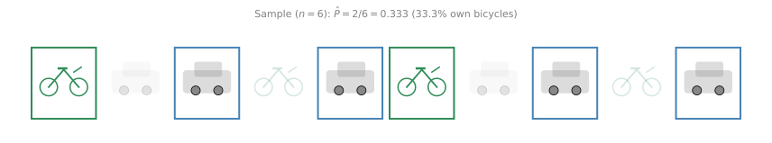
Notice that the sample proportion (33.3%) is an estimate of the population proportion (40%). Just like with the sample mean, it will not be exactly equal to the population value, but with good random sampling and larger sample sizes, it will get closer.
Review Questions
9. What is the population proportion and how is it different from the sample proportion?
TipAnswer
The population proportion \(P\) is the fraction of the entire population that has a given characteristic (\(P = x/N\)). The sample proportion \(\hat{P}\) is the same fraction computed on a sample of size \(n\) (\(\hat{P} = x/n\)). The sample proportion is an estimate of the population proportion.
10. In the Statistopia example, why is \(\hat{P} = 0.333\) not equal to \(P = 0.40\)?
TipAnswer
Because the sample is only a subset of the population. By chance, the 6 people selected happened to include only 2 bicycle owners instead of the proportional 2.4. With a different random sample or a larger sample size, \(\hat{P}\) would likely be closer to \(P\).
Law of Large Numbers
We saw earlier that larger samples give better estimates. The Law of Large Numbers makes this precise: as the sample size grows, the sample mean converges to the population mean.
Dice Example
Consider a fair 4-sided die with outcomes 1, 2, 3, 4. The population mean is:
\[ \mu = \frac{1 + 2 + 3 + 4}{4} = 2.5 \]
Rolling this die twice gives 16 possible pairs:
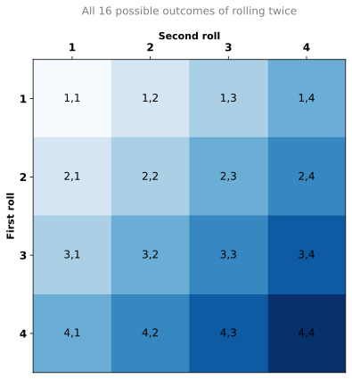
The mean of all these outcomes is still the population mean: \(\mu = 2.5\).
Now imagine you roll the die repeatedly and keep a running average. After 1 roll, you might get 4 (far from 2.5). After 2 rolls, you average both results. After 3, 4, 5, … rolls, the running average keeps updating.
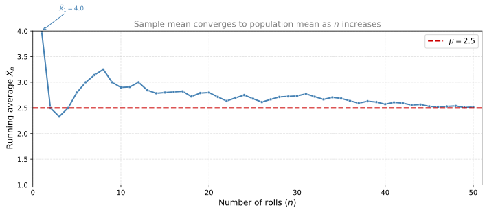
Notice how the running average starts off noisy but settles closer and closer to the population mean as \(n\) increases.
Formal Statement
Let \(X_1, X_2, \ldots, X_n\) be i.i.d. random variables with population mean \(\mu = \mathbb{E}[X]\). The Law of Large Numbers states that as \(n \to \infty\):
\[ \bar{X}_n = \frac{1}{n}\sum_{i=1}^{n} X_i \longrightarrow \mu \]
In words: the sample mean converges to the population mean as the sample size grows.
Conditions
- Random sampling: samples must be drawn randomly from the population.
- Sufficiently large sample size: the larger the sample, the more accurate the estimate.
- Independence: individual observations must be independent of each other.
These are the same i.i.d. conditions discussed earlier in this page.
Multiple Simulations
To see that this is not a fluke of one particular sequence, here are 8 independent simulations:
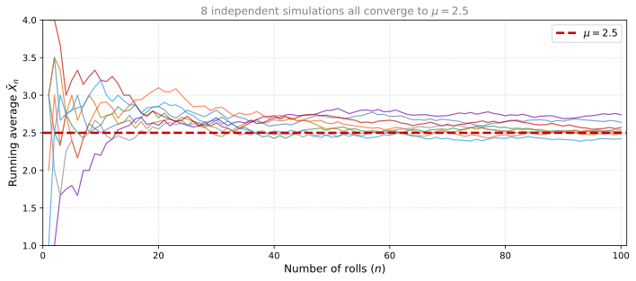
Every simulation starts at a different place, but they all converge toward \(\mu = 2.5\).
Review Questions
11. What does the Law of Large Numbers say in plain language?
TipAnswer
As you increase the number of samples, the sample mean gets closer and closer to the true population mean. With enough data, your estimate becomes arbitrarily accurate.
12. What are the three conditions required for the Law of Large Numbers to hold?
TipAnswer
- Samples must be drawn randomly from the population.
- The sample size must be sufficiently large.
- Individual observations must be independent of each other (i.i.d.).
13. If you roll a fair 4-sided die 1,000 times and compute the average, what value would you expect it to be close to? What about 10 rolls?
TipAnswer
Both would be estimates of \(\mu = 2.5\), but 1,000 rolls would give an average much closer to 2.5 than 10 rolls. With 10 rolls, the average could still be noticeably different from 2.5 due to randomness. With 1,000 rolls, the Law of Large Numbers guarantees the average will be very close to 2.5.
14. Consider the population \(P = \{1, 1, 3, 5, 10\}\) and the sample \(S = \{1, 3\}\). What is the value of the sample mean?
- 6
- It cannot be computed with the given information.
- 4
- 2
TipAnswer
d. \(\bar{X} = \frac{1 + 3}{2} = 2\). The sample mean is simply the average of the values in the sample.
15. What is the difference between a sample and a population in statistics?
- A sample is the entire group being studied, while a population is a subset of that group.
- A population is the entire group being studied, while a sample is a subset of that group.
- A population is a group from which a sample is drawn, and both terms can be used interchangeably.
TipAnswer
b. A population is the entire group of interest. A sample is a smaller subset drawn from it to make inferences about the population.
Sampling Designs
Note
Source: The content in this section and the Sampling Bias section is adapted from:
Leedy, P. D., & Ormrod, J. E. (2016). Practical research: Planning and design (11th ed., Global ed.). Pearson Education.
⚠️ Needs review: This section has not been fully verified against the source. Content should be checked for accuracy before use.
So far we have discussed why random sampling matters. But how do we actually go about selecting a sample in practice? Different situations call for different sampling strategies. There are two major categories: probability sampling (where every member has a known chance of selection) and nonprobability sampling (where some members may have little or no chance of being included).
Probability Sampling
In probability sampling, the sample is chosen from the overall population by random selection — each member of the population has an equal (or at least known) chance of being chosen. When such a random sample is selected, we can assume that the characteristics of the sample approximate the characteristics of the total population.
Simple Random Sampling
Simple random sampling is the most basic form: every member of the population has an equal chance of being selected, and selections are independent of each other.
- Assign each person in the population a unique number.
- Use a random number generator (or random number table) to pick \(n\) numbers.
- The corresponding individuals form your sample.
This works well for small, well-defined populations. For very large populations (e.g., all adults in a country), simple random sampling is often impractical because you need a complete list of every member.
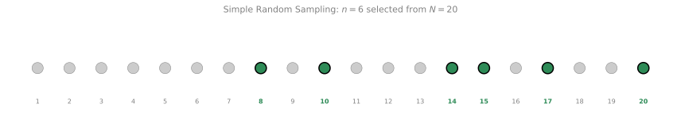
Stratified Random Sampling
When a population has distinct subgroups (called strata) — for example, different grade levels, age groups, or income brackets — we can sample equally from each stratum. This guarantees that every subgroup is represented in our sample.
Procedure:
- Divide the population into strata based on a known characteristic.
- Take a simple random sample from each stratum.
- Combine the samples.
Advantage: Guarantees equal representation of each identified stratum.
Best for: Populations with clearly defined strata of roughly equal size.
Proportional Stratified Sampling
When the strata are of different sizes, we sample from each stratum in proportion to its size in the population.
Example: A town has 1,000 Jewish residents, 2,000 Catholics, and 3,000 Protestants. For every 1 Jewish person in the sample, there should be 2 Catholics and 3 Protestants.
Procedure:
- Identify the proportion of each stratum in the population.
- Take a random sample from each stratum, with sample sizes matching those proportions.
Cluster Sampling
Sometimes the population is spread over a large geographic area, and it is not feasible to list every individual. In cluster sampling, we divide the population into clusters (e.g., neighborhoods, schools, counties), randomly select some clusters, and then include all members of the selected clusters.
Key property: Clusters should be as similar to one another as possible (each cluster internally heterogeneous), so that any randomly chosen subset of clusters is representative of the whole.
Systematic Sampling
In systematic sampling, you select every \(k\)-th individual from a list after choosing a random starting point.
Procedure:
- Arrange the population in a list (e.g., alphabetically).
- Compute \(k = N / n\) (the sampling interval).
- Choose a random starting point between 1 and \(k\).
- Select every \(k\)-th individual from that point onward.
Example: From a population of 100, you want a sample of 10. So \(k = 10\). You randomly pick a start of 3. Your sample is: 3, 13, 23, 33, 43, 53, 63, 73, 83, 93.
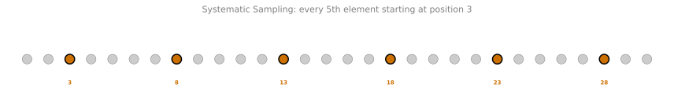
Multistage Sampling
For very large populations (e.g., an entire country), researchers use multistage sampling — a combination of cluster sampling applied at multiple levels:
- Divide the country into large primary areas (counties, metropolitan areas). Randomly select some.
- Within selected areas, identify smaller locations (towns, districts). Randomly select some.
- Within selected locations, identify blocks or chunks. Randomly select some.
- Within selected blocks, identify individual housing units. Randomly select some.
At each stage, units are selected randomly. This yields a representative national sample without needing a list of every individual.
Nonprobability Sampling
In nonprobability sampling, the researcher has no way of guaranteeing that each member of the population will be represented. Some members may have little or no chance of being sampled. These methods are less rigorous but sometimes necessary or appropriate.
Convenience Sampling
Convenience sampling (also called accidental sampling) selects whoever is readily available. There is no attempt to ensure representativeness.
Example: You survey 40 customers who happen to arrive at your restaurant at 6 a.m. on weekdays. This gives you the opinions of early risers — mostly men in certain occupations — not the full population of your customers.
Use case: Acceptable when you only need information about a specific accessible group, or for pilot studies and exploratory research.
Quota Sampling
Quota sampling selects respondents in the same proportions as the general population, but not randomly.
Example: If a population has 50% men and 50% women, you interview 20 men and 20 women, but you pick whoever passes by rather than selecting randomly.
Limitation: It controls for group sizes, but people who happen to be available may not be representative of their group.
Purposive Sampling
In purposive sampling, participants are chosen deliberately because they are “typical” of a group or provide diverse perspectives on an issue.
Example: Election pollsters select specific voting districts that have historically been predictive of overall election outcomes.
Limitation: Researchers should always explain their rationale for selecting a particular sample. Results may not generalize beyond the chosen group.
Choosing a Sampling Design
| Population Characteristic | Appropriate Technique |
|---|---|
| Homogeneous group of individual units | Simple random sampling or systematic sampling |
| Distinct strata of roughly equal size | Stratified random sampling |
| Distinct strata of different proportions | Proportional stratified sampling |
| Discrete clusters with similar composition | Cluster sampling or systematic sampling of clusters |
| Very large, geographically dispersed | Multistage sampling |
Review Questions
16. What is the key difference between probability sampling and nonprobability sampling?
TipAnswer
In probability sampling, every member of the population has a known (often equal) chance of being selected. In nonprobability sampling, some members may have little or no chance of being included, and the researcher cannot guarantee representativeness.
17. A school has 100 fourth-graders, 100 fifth-graders, and 100 sixth-graders. A researcher takes a random sample of 10 from each grade. What type of sampling is this?
TipAnswer
Stratified random sampling. The population has distinct strata (grade levels) of equal size, and the researcher samples equally from each stratum.
18. A city has 12 neighborhoods. A researcher randomly selects 3 neighborhoods and surveys everyone in them. What sampling method is this?
TipAnswer
Cluster sampling. The researcher randomly selects entire clusters (neighborhoods) rather than randomly selecting individuals from across the full population.
19. You survey the first 50 people to walk into a library on Monday morning. What type of sampling is this, and what is the main concern?
TipAnswer
Convenience sampling. The main concern is that people who visit the library on Monday morning may not be representative of the full population of library users (let alone the general population). For instance, they may be disproportionately retirees or students without morning classes.
20. A national polling organization wants to estimate opinions of all adults in the country. Why might simple random sampling be impractical, and what alternative is commonly used?
TipAnswer
Simple random sampling requires a complete list of every adult in the country, which is impractical. Instead, organizations use multistage sampling: they randomly select large geographic areas, then smaller areas within those, then blocks, then individual households — applying randomness at each stage.
Sampling Bias
Even with a sound sampling design, bias can creep in. Sampling bias is any factor that produces a sample that is not representative of the population.
Common Sources of Sampling Bias
Selection bias: Not everyone in the population has an equal chance of being selected.
- Using a phone book to sample a city excludes low-income individuals (who may not have landlines), wealthy individuals (who may have unlisted numbers), and younger people (who use only cell phones).
- Online surveys exclude people without Internet access or computer literacy.
Nonresponse bias: People who choose not to respond may differ systematically from those who do.
- In mailed questionnaires, respondents tend to be more educated, healthier, and more interested in the topic than nonrespondents.
- A low response rate increases the likelihood of bias.
Example: A questionnaire sent to 100 citizens asks, “Have you ever been audited by the IRS?” Of 70 returned, 35 say yes and 35 say no. The researcher concludes 50% of citizens get audited. But previously audited people may have been embarrassed and thrown the questionnaire away — meaning the true rate among the full 100 could be higher.
How to Reduce Sampling Bias
- Use probability sampling methods whenever possible.
- Maximize response rates (follow up with nonrespondents).
- Compare early responders with late responders — differences may indicate what nonrespondents would have said.
- Report the percentage of people who participated versus those who did not.
- Acknowledge potential biases honestly in your conclusions.
Review Questions
21. A researcher samples phone numbers from a city directory to survey residents. What populations are systematically excluded?
TipAnswer
People without landlines (low-income individuals who cannot afford phone service), people with unlisted numbers (often wealthier individuals), and people who use only cell phones (often younger adults). The resulting sample over-represents middle-income, older residents.
22. In a mailed questionnaire study, only 40% of recipients respond. Why is this a problem?
TipAnswer
The 60% who did not respond may differ from the 40% who did. For example, nonrespondents may be less educated, busier, less interested in the topic, or have different views than respondents. The resulting sample may not represent the full population, making conclusions unreliable.
Summary
| Symbol | Name | Definition |
|---|---|---|
| \(N\) | Population size | Total number of elements in the population |
| \(n\) | Sample size | Number of elements in the sample |
| \(\mu\) | Population mean | True average across all \(N\) values |
| \(\bar{X}\) | Sample mean | Average of \(n\) sampled values, used to estimate \(\mu\) |
| \(P\) | Population proportion | Fraction of the population with a given characteristic (\(x/N\)) |
| \(\hat{P}\) | Sample proportion | Fraction of a sample with a given characteristic (\(x/n\)), estimates \(P\) |
| i.i.d. | Independent and identically distributed | Samples must be independent of each other and drawn using the same rule |
| LLN | Law of Large Numbers | As \(n \to \infty\), \(\bar{X}_n \to \mu\) |
| Sampling Type | Category | Description |
|---|---|---|
| Simple Random | Probability | Every member has equal chance of selection |
| Stratified Random | Probability | Equal random samples from each stratum |
| Proportional Stratified | Probability | Random samples proportional to stratum sizes |
| Cluster | Probability | Randomly select entire clusters |
| Systematic | Probability | Every \(k\)-th element from a random start |
| Multistage | Probability | Cluster sampling applied at multiple levels |
| Convenience | Nonprobability | Whoever is readily available |
| Quota | Nonprobability | Correct proportions, but non-random selection |
| Purposive | Nonprobability | Deliberately chosen for a specific reason |